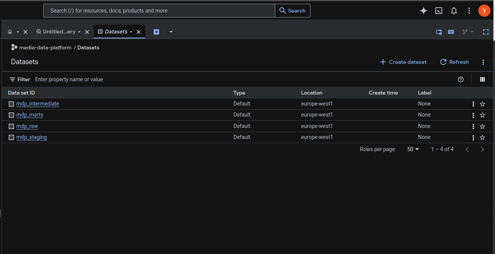
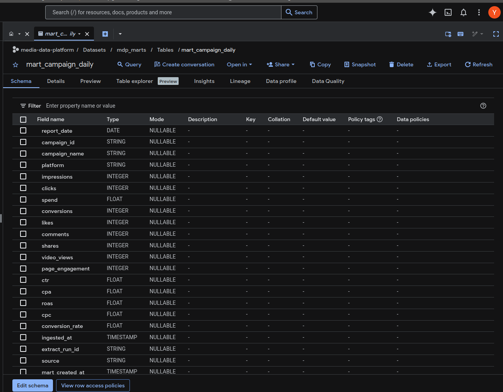
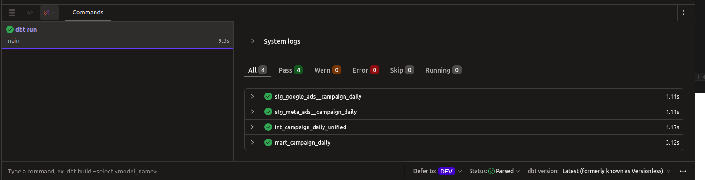
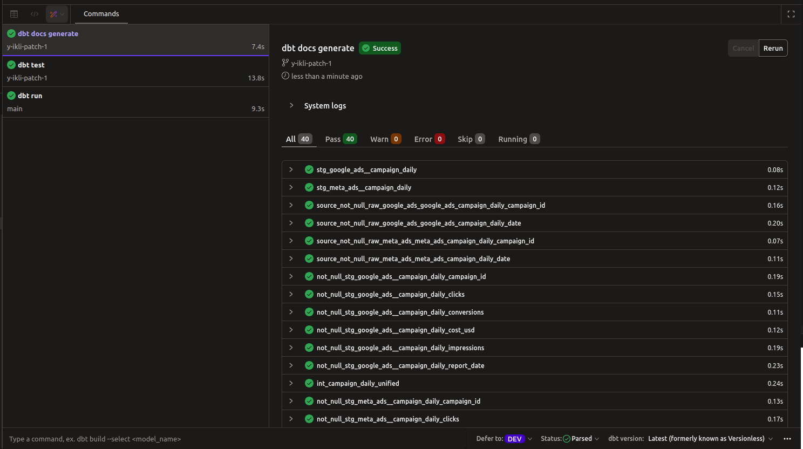
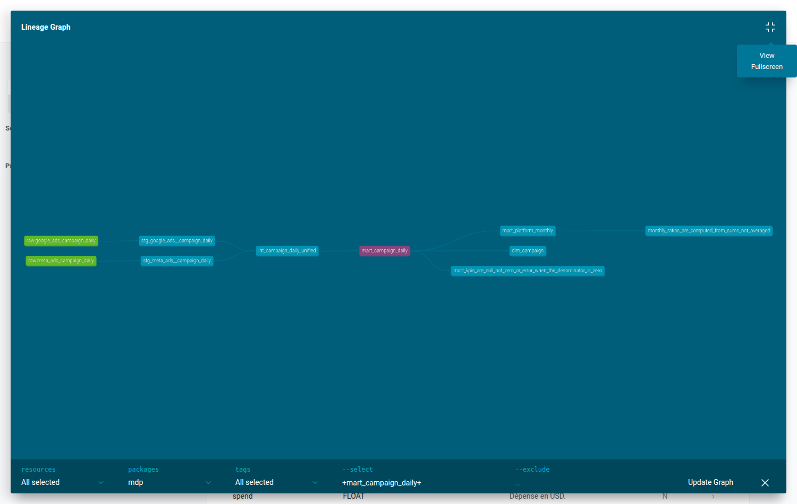
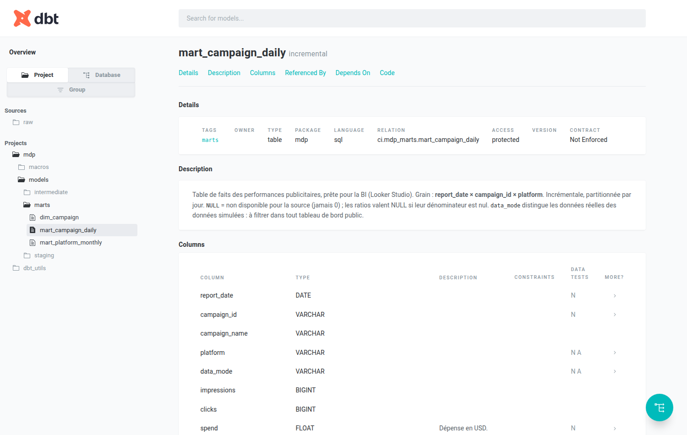

Marketing Data Platform¶
Pipeline ELT publicitaire — Meta Ads (API réelle) + Google Ads — vers des data marts analytiques dans BigQuery, avec transformations dbt et validation qualité automatisée.
Stack : Python · BigQuery ·dbt · GitHub Actions
Repo : github.com/y-ikli/media-data-platform
Contexte¶
Une agence marketing gère des campagnes sur Meta et Google simultanément. Chaque plateforme expose ses données dans son propre format : nommages différents, métriques incohérentes, exports manuels.
Problème concret : le CTR n'est pas calculé de la même façon selon la source. Comparer Meta et Google sur les mêmes campagnes et les mêmes dates devient impossible sans un socle normalisé.
Solution : un pipeline ELT qui unifie les deux sources en une seule table analytique, avec une définition unique de chaque KPI.
Architecture¶
Meta Ads API (réelle) Google Ads (simulé)
│ │
▼ ▼
Python connector Python connector
(facebook-business SDK) (Strategy pattern — même interface)
│ │
└──────────────┬───────────────┘
▼
mdp_raw (BigQuery)
Données brutes + métadonnées (UUID, ingested_at)
Partitionné par date — idempotent
│
▼
dbt — 3 couches
├─► Staging — typage, nettoyage, standardisation par source
├─► Intermediate — union des schémas (UNION ALL)
└─► Marts — KPI calculés, prêts pour la BI
En production, un orchestrateur (Airflow) déclencherait ce pipeline quotidiennement pour ingérer les données J-1, relancer dbt et valider la qualité.
Résultats¶
| Source | Lignes | Campagnes | Spend | Période |
|---|---|---|---|---|
| Meta Ads (réelle) | 447 | 46 | $1 402 | 2023-04-23 → 2025-08-25 |
| Google Ads (simulé) | 4 280 | 5 | — | même période |
Table finale : 4 727 lignes · 36 tests PASS · 0 erreur
Aperçu¶
BigQuery — Datasets¶

4 datasets avec responsabilités distinctes : raw → staging → intermediate → marts.BigQuery — Table finale¶

mart_campaign_daily : ~4 700 lignes, KPI calculés, données Meta + Google unifiées.
dbt — Run & Tests¶


4 modèles PASS · 36 tests PASS · aucun warning.dbt — Lineage¶

Sources → staging → intermediate → marts. Traçabilité end-to-end.dbt — Documentation¶

Détail technique¶
1. Ingestion Python¶
Classe abstraite DataSourceConnector avec 3 étapes :
extract() ← implémenté par chaque source
load_raw() ← enrichissement metadata (ingested_at, extract_run_id UUID)
write_to_bigquery() ← écriture WRITE_APPEND, déduplication par partition
Ajouter une nouvelle source (TikTok, LinkedIn) = implémenter uniquement extract().
2. BigQuery — Architecture Medallion¶
| Dataset | Rôle | Type |
|---|---|---|
mdp_raw |
Données brutes + audit | Table partitionnée |
mdp_staging |
Standardisation par source | Vue dbt |
mdp_intermediate |
Union des sources, schéma commun | Vue dbt |
mdp_marts |
KPI finaux, optimisés BI | Table clusterisée |
3. KPI dbt¶
| KPI | Formule |
|---|---|
| CTR | clicks / impressions |
| CPC | spend / clicks |
| CPA | spend / conversions |
| ROAS | conversions / spend |
| Taux de conversion | conversions / clicks |
Grain garanti : 1 ligne = 1 campagne × 1 date × 1 plateforme
4. Qualité des données¶
not_nullsur toutes les clés et métriquesaccepted_valuessurplatformunique_combination_of_columnssur (report_date, campaign_id, platform)- Tests SQL : CTR ≤ 100%, clicks ≤ impressions, métriques ≥ 0
5. CI/CD — GitHub Actions¶
- Lint Python (
pylint) — fail si score < 10/10 - Tests unitaires (
pytest) - Compilation dbt (sans credentials BigQuery)
Choix techniques¶
Ingestion¶
| Outil | Type | Quand l'utiliser |
|---|---|---|
| Connecteur Python custom ← ce projet | Code maîtrisé | Apprentissage, contrôle total |
| Fivetran | SaaS managé | Production, budget disponible, 300+ connecteurs |
| Airbyte | Open source | Self-hosted, alternative Fivetran |
En production réelle, Fivetran ou Airbyte seraient préférables (maintenabilité, monitoring natif, gestion des schémas évolutifs).
Transformation¶
| Problème | Solution dbt |
|---|---|
| "Ce KPI est calculé comment ?" | Lineage graph + doc auto |
| "Les données sont-elles fiables ?" | Tests automatiques à chaque run |
| "Deux équipes, deux CTR différents" | Une seule définition, versionnée dans git |
Alternatives :
- SQL pur dans BigQuery → pas de tests, pas de gestion des dépendances.
- Spark / Dataproc → justifié pour des volumes > TB.
- pandas → en mémoire, pour l'exploration.
Data Warehouse¶
| Critère | BigQuery | Snowflake | Redshift |
|---|---|---|---|
| Prix | Pay-per-query | Pay-per-compute | Instance permanente |
| Scalabilité | Serverless | Serverless | Nœuds à gérer |
| SQL | Standard | Standard | PostgreSQL-like |
Le code dbt est portable : changer profiles.yml suffit pour migrer sur Snowflake ou Redshift.
Points notables¶
- Idempotence : pipeline rejouable sans doublons —
extract_run_idtrace chaque run. - Traçabilité : chaque ligne porte un UUID liant la donnée à son run d'ingestion.
- Schéma cross-platform :
campaign_idcasté en STRING (Google = string, Meta = entier) pour leUNION ALL. - Valeurs manquantes :
conversionsnull pour Meta (non fourni par l'API) → CPA/ROAS null pour Meta, ce qui est correct.